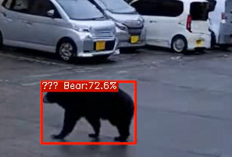
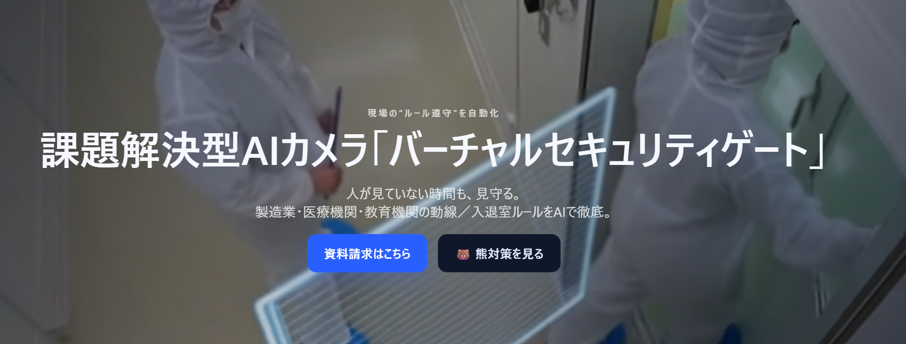
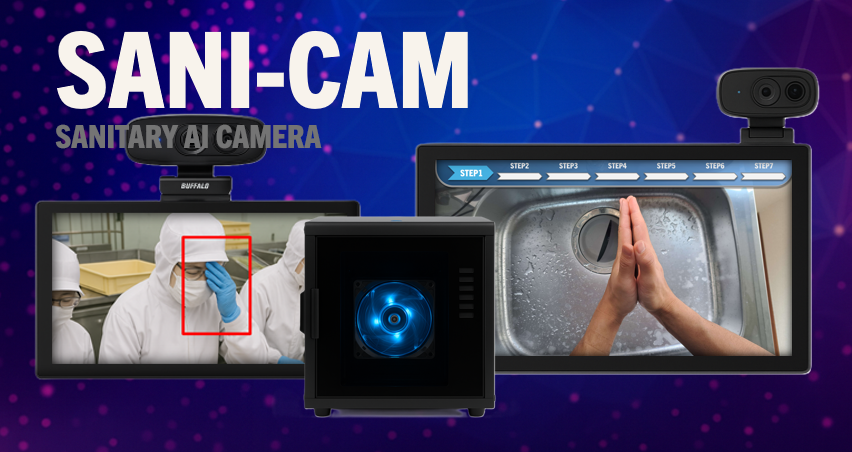

クラウド型カメラは映像をインターネットの向こうに預けるため、利用者がどれだけ気をつけても、事業者側への侵入や内部の不正閲覧、システム障害による取り違えは防げません。nanoGUARDはAI処理も録画も構内で完結させるので、こうした流出経路がそもそもありません。
保育園や食品工場の防犯カメラ映像 約500件が、海外サイトで誰でも見られる状態に
クラウド型カメラ事業者が侵入され、15万台を超えるライブカメラにアクセスされる
クラウドの障害で、約1万3,000人のアプリに他人のカメラ映像が表示される
※「流出リスクゼロ」は、映像を外部ネットワークへ送信しない構成であることを指します。構内ネットワークの設定（パスワード・アクセス範囲）は導入時に一緒に行います。
進入検知・接触検知・転倒検出・人数カウントは、導入したその日から使える標準機能です。製造・食品・医療・物流と、業種を問わず共通する課題に対応します。
こんな現場でご活用いただいています
「この場面を見張りたい」という課題を伺い、PoC（実証実験）で現場の映像を使って専用のAIを開発します。これまでに開発した例です。

門に設置したカメラでクマの接近を検知し、現場に警告します。山間部の工場・施設や農地で、作業者の安全を守ります。
詳しく見る
出入口にカメラで仮想のゲートを設け、消毒をせずに通過した人を検知して音声で注意します。入退室の記録も残ります。
詳しく見る
WHO準拠の手洗い6ステップをAIが採点し、記録します。慶應義塾大学病院様で手指衛生AIの実証を行いました。
詳しく見る実現できるかどうかは、現場の映像を見せていただければ判断できます。
見張りたい場面、カメラの位置、ネットワーク環境を伺います。既存カメラが使えるかも確認します。
進入検知・接触検知・転倒検出・人数カウントを、すぐ使える状態で設置します。
標準にない検知は、現場の映像を使ってPoCで開発し、精度を一緒に確かめます。
通知先や検知ルールを調整しながら運用します。記録はそのままISO・HACCPの証跡になります。
費用はカメラの台数・設置環境・開発の内容によって変わるため、個別にお見積りします。
| 管理項目 | 導入前 | nanoGUARD導入後 |
|---|---|---|
| 映像の保管場所 | クラウド事業者のサーバーに預ける | 構内のエッジ端末だけに保存。外部送信なし |
| 立入禁止エリアへの侵入 | 後から映像を見返して気づく | 侵入した瞬間にアラームで通知 |
| 顔への接触リスク | 把握できない。注意しても繰り返す | 検知とログで回数を見える化し、行動改善へ |
| 転倒・体調不良の発見 | 巡回か本人からの連絡待ち | 骨格AIが検出し、管理者へすぐ通知 |
| エリアの人数把握 | 目視で数える・把握していない | 通過人数を自動でカウント |
| ISO・HACCP 記録 | 手作業で作成、監査前に書類集め | 日々の運用が自動的に監査証跡になる |
検知した出来事をタイムスタンプ付きで自動記録。
不適合が起きたときは映像・骨格データですぐに遡って調べられます。内部監査のログ・映像はWebUIからCSVで即エクスポートできます。
標準機能で足りるか、PoCでの開発が必要か分からない場合もお気軽にご相談ください。
見張りたい場面と現場の環境を伺い、構成をご提案します。